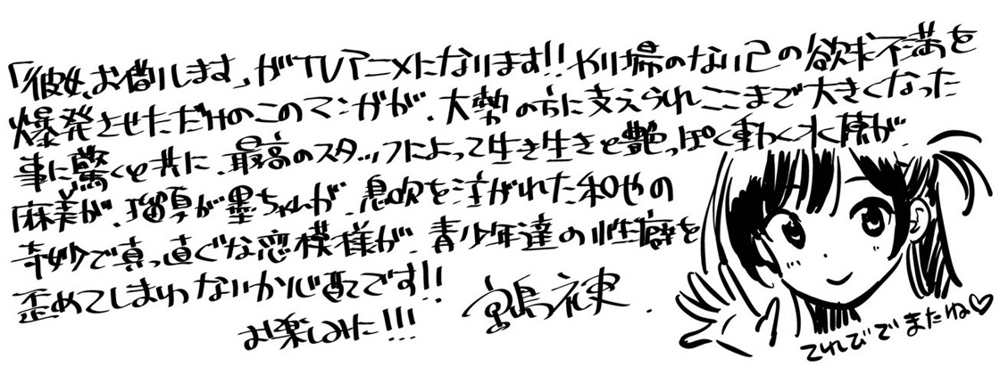

2019.12.15
原作・宮島礼吏先生直筆お祝いコメント＆描き下ろしイラスト色紙到着！
原作の宮島礼吏先生から、直筆のお祝いコメントをいただきました！

また、アニメ化をお祝いした描き下ろしイラスト色紙も公開！

Twitterでは、こちらの色紙が抽選で１名様に当たる、プレゼントキャンペーンも開催！
アニメ公式アカウント（@kanokari_anime）をフォローして、該当の投稿をRTするだけで応募完了となります。
応募期間は、12月15日（日）〜12月28日（土）までです。
ぜひご応募ください！